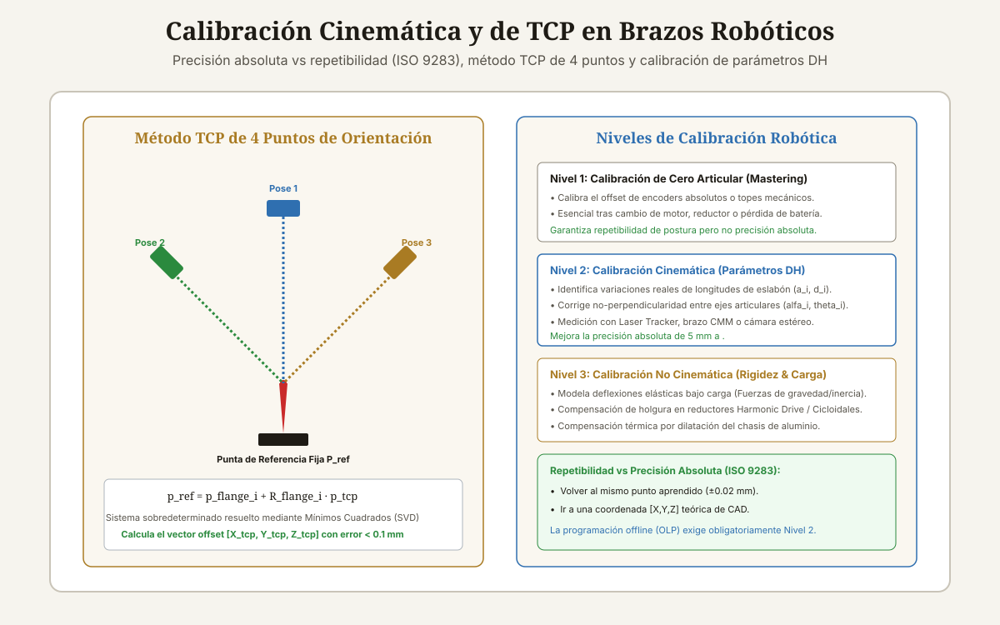

<!DOCTYPE html>
<html lang="es-CL">
<head>
<meta charset="UTF-8">
<meta name="viewport" content="width=device-width, initial-scale=1">

<title>Guía de Calibración de Brazos Robóticos</title>
<meta name="description" content="Guía completa de calibración de brazos robóticos: calibración de TCP de 4 puntos, cero de encoders (mastering), parámetros DH y metrología ISO 9283.">
<meta name="author" content="Alberto Gallardo">
<meta name="robots" content="index,follow,max-image-preview:large">
<link rel="canonical" href="https://www.ukrabot.cl/blog/guia-de-calibracion-de-brazos-roboticos">

<meta property="og:type" content="article">
<meta property="og:title" content="Guía de Calibración de Brazos Robóticos">
<meta property="og:description" content="Guía completa de calibración de brazos robóticos: calibración de TCP de 4 puntos, cero de encoders (mastering), parámetros DH y metrología ISO 9283.">
<meta property="og:image" content="https://www.ukrabot.cl/blog/calibracion_brazos_roboticos_esquema.svg">
<meta property="og:url" content="https://www.ukrabot.cl/blog/guia-de-calibracion-de-brazos-roboticos">
<meta property="og:locale" content="es_CL">
<meta property="og:site_name" content="Blog de Ingeniería Robótica">

<meta name="twitter:card" content="summary_large_image">
<meta name="twitter:title" content="Guía de Calibración de Brazos Robóticos">
<meta name="twitter:description" content="Guía completa de calibración de brazos robóticos: calibración de TCP de 4 puntos, cero de encoders (mastering), parámetros DH y metrología ISO 9283.">
<meta name="twitter:image" content="https://www.ukrabot.cl/blog/calibracion_brazos_roboticos_esquema.svg">

<script type="application/ld+json">
{
  "@context": "https://schema.org",
  "@type": "TechArticle",
  "headline": "Guía de Calibración de Brazos Robóticos",
  "description": "Guía completa de calibración de brazos robóticos: calibración de TCP de 4 puntos, cero de encoders (mastering), parámetros DH y metrología ISO 9283.",
  "author": {
    "@type": "Person",
    "name": "Alberto Gallardo",
    "jobTitle": "Analista Programador Computacional",
    "url": "https://www.ukrabot.cl/about",
    "worksFor": {
      "@type": "Organization",
      "name": "Blog de Ingeniería Robótica"
    }
  },
  "publisher": {
    "@type": "Organization",
    "name": "Blog de Ingeniería Robótica",
    "url": "https://www.ukrabot.cl",
    "logo": {
      "@type": "ImageObject",
      "url": "https://www.ukrabot.cl/logo.png"
    }
  },
  "datePublished": "2026-08-15",
  "dateModified": "2026-08-15",
  "mainEntityOfPage": {
    "@type": "WebPage",
    "@id": "https://www.ukrabot.cl/blog/guia-de-calibracion-de-brazos-roboticos"
  },
  "image": "https://www.ukrabot.cl/blog/calibracion_brazos_roboticos_esquema.svg",
  "proficiencyLevel": "Avanzado",
  "dependencies": "Álgebra matricial de transformaciones homogéneas, instrumentos de metrología (Laser Tracker, brazo CMM o comparador de carátula centesimal)",
  "wordCount": "3500",
  "inLanguage": "es-CL"
}
</script>

<script type="application/ld+json">
{
  "@context": "https://schema.org",
  "@type": "BreadcrumbList",
  "itemListElement": [
    {
      "@type": "ListItem",
      "position": 1,
      "name": "Inicio",
      "item": "https://www.ukrabot.cl/"
    },
    {
      "@type": "ListItem",
      "position": 2,
      "name": "Blog",
      "item": "https://www.ukrabot.cl/blog/"
    },
    {
      "@type": "ListItem",
      "position": 3,
      "name": "Guía de Calibración de Brazos Robóticos",
      "item": "https://www.ukrabot.cl/blog/guia-de-calibracion-de-brazos-roboticos"
    }
  ]
}
</script>

<script type="application/ld+json">
{
  "@context": "https://schema.org",
  "@type": "FAQPage",
  "mainEntity": [
    {
      "@type": "Question",
      "name": "¿Qué es un Laser Tracker y por qué es el estándar en calibración Nivel 2?",
      "acceptedAnswer": {
        "@type": "Answer",
        "text": "Un Laser Tracker es un instrumento de metrología óptica que dispara un rayo láser a un prisma reflector esférico (SMR) montado en la brida del robot. Mide las coordenadas 3D espaciales con una precisión de $\\pm 0.01\text{ mm}$ a 10 metros de distancia, registrando cientos de poses del robot en minutos."
      }
    },
    {
      "@type": "Question",
      "name": "¿Cada cuánto tiempo se debe calibrar el TCP de un robot?",
      "acceptedAnswer": {
        "@type": "Answer",
        "text": "El TCP debe verificarse diariamente mediante un sensor de contacto o calibre óptico automático. Si el efector final sufre una colisión accidental o se reemplaza la boquilla/aguja, el TCP debe recalibrarse de inmediato."
      }
    },
    {
      "@type": "Question",
      "name": "¿Por qué la calibración de fábrica de un robot se pierde con el tiempo?",
      "acceptedAnswer": {
        "@type": "Answer",
        "text": "Debido al desgaste mecánico progresivo de los dientes de los engranajes reductores, la pérdida de tensión en las correas de transmisión internas y deformaciones plásticas menores causadas por sobrecargas dinámicas durante años de operación continua."
      }
    },
    {
      "@type": "Question",
      "name": "¿Qué es el método de calibración por ChArUco / OpenCV?",
      "acceptedAnswer": {
        "@type": "Answer",
        "text": "Es un método de bajo costo que utiliza una cámara montada en el robot o en el techo apuntando a un patrón plano ChArUco (tablero de ajedrez con marcadores ArUco). Permite identificar parámetros cinemáticos con precisión submilimétrica sin necesidad de costosos equipos de metrología láser."
      }
    },
    {
      "@type": "Question",
      "name": "¿La calibración cinemática modifica el controlador interno del robot?",
      "acceptedAnswer": {
        "@type": "Answer",
        "text": "Depende del fabricante: en algunos robots (como Fanuc con opción Accurate Robot o KUKA con Absolute Accuracy) los parámetros se cargan directamente en el firmware del controlador. En otros casos, el software de programación offline (como RoboDK) aplica los factores de corrección en el post-procesador antes de enviar el archivo de código al robot."
      }
    }
  ]
}
</script>

<style>
:root{--ink:#f6f4ee;--card:#ffffff;--text:#1e1b15;--muted:#57534a;--quiet:#8b8577;--gold:#a97b23;--gold-bright:#e4c07a;--blue:#2f6fb0;--line:rgba(30,25,15,.09)}
*{box-sizing:border-box}
html{scroll-behavior:smooth}
body{margin:0;background:var(--ink);color:var(--text);font-family:Inter,system-ui,-apple-system,Segoe UI,sans-serif;line-height:1.7;overflow-x:hidden}
img{max-width:100%;height:auto}
a{color:var(--blue);text-underline-offset:3px}
.container{max-width:1050px;margin:auto;padding:0 24px}

/* NAV */
.site-nav{position:sticky;top:0;z-index:50;background:rgba(246,244,238,.95);backdrop-filter:blur(12px);border-bottom:1px solid var(--line)}
.nav-inner{position:relative;display:flex;justify-content:space-between;align-items:center;padding:16px 24px;max-width:1050px;margin:auto;gap:12px}
.logo{color:var(--text);text-decoration:none;font-family:Georgia,serif;font-size:1.35rem;flex-shrink:0}
.logo span{color:var(--gold);font-style:italic}
.nav-links{display:flex;gap:20px;font-size:.86rem}
.nav-links a{color:var(--muted);text-decoration:none;white-space:nowrap}
.nav-links a:hover{color:var(--text)}
.nav-toggle{display:none;flex-direction:column;justify-content:center;gap:5px;width:38px;height:38px;padding:0;background:none;border:1px solid var(--line);border-radius:8px;cursor:pointer;flex-shrink:0}
.nav-toggle span{display:block;width:18px;height:2px;background:var(--text);margin:0 auto;transition:transform .2s ease,opacity .2s ease}
.nav-toggle[aria-expanded="true"] span:nth-child(1){transform:translateY(7px) rotate(45deg)}
.nav-toggle[aria-expanded="true"] span:nth-child(2){opacity:0}
.nav-toggle[aria-expanded="true"] span:nth-child(3){transform:translateY(-7px) rotate(-45deg)}

.progress-bar{position:fixed;top:0;left:0;height:3px;width:0;background:linear-gradient(90deg,var(--gold),var(--blue));z-index:300;transition:width .08s linear}

.hero{position:relative;min-height:50vh;display:flex;align-items:end;overflow:hidden;background:#151310}
.hero>img{position:absolute;inset:0;width:100%;height:100%;object-fit:cover;filter:brightness(.45) contrast(1.08);z-index:0}
.hero:after{content:"";position:absolute;inset:0;background:linear-gradient(180deg,rgba(18,15,11,.35) 0%,rgba(18,15,11,.62) 55%,rgba(18,15,11,.88) 100%);z-index:1}
.hero-inner{position:relative;z-index:2;padding:90px 24px 60px;width:100%;max-width:1050px;margin:auto}
.eyebrow{color:var(--gold-bright);font-size:.76rem;letter-spacing:.13em;text-transform:uppercase;font-weight:700}
.hero h1{font-family:Georgia,serif;font-size:clamp(1.9rem,5.5vw,3.8rem);line-height:1.15;font-weight:400;max-width:900px;margin:18px 0;color:#fff;word-wrap:break-word}
.hero p{color:rgba(245,243,238,.78);max-width:720px;font-size:1.05rem}
.byline{color:rgba(245,243,238,.55);font-size:.85rem;margin-top:14px}
.byline a{color:var(--gold-bright);text-decoration:none}
.byline a:hover{text-decoration:underline}

.article-body{padding-top:64px;padding-bottom:90px}
.article-body h2{font-family:Georgia,serif;font-size:1.9rem;font-weight:400;line-height:1.2;margin:54px 0 16px;color:var(--text)}
.article-body h3{font-size:1.18rem;margin:32px 0 8px;color:var(--text)}
.article-body p{color:var(--muted);margin:0 0 20px}
.article-body li{color:var(--muted);margin:8px 0}
.article-body strong{color:var(--text)}

.toc,.note,.cta{background:linear-gradient(135deg,rgba(169,123,35,.08),rgba(47,111,176,.06));border:1px solid var(--line);border-radius:14px;padding:24px;margin:28px 0}
.toc h2{font-family:inherit;font-size:1.05rem;margin:0 0 10px}
.toc ol{margin:0;padding-left:22px}
.toc a{color:var(--muted);text-decoration:none}
.toc a:hover{color:var(--gold)}

.note{border-left:4px solid var(--gold)}
.note strong{color:var(--text)}
.warning{background:linear-gradient(135deg,rgba(178,40,30,.08),rgba(178,40,30,.03));border:1px solid rgba(178,40,30,.25);border-left:4px solid #b2281e;border-radius:14px;padding:24px;margin:28px 0}
.warning strong{color:#7a1c14}

.article-img{margin:0 0 42px;border:1px solid var(--line);border-radius:14px;overflow:hidden}
.article-img img{width:100%;display:block}
.caption{padding:12px 16px;background:var(--card);color:var(--quiet);font-size:.82rem}

.table-wrap{overflow-x:auto;-webkit-overflow-scrolling:touch;border:1px solid var(--line);border-radius:12px;margin:22px 0;box-shadow:0 8px 24px rgba(30,25,15,.06)}
table{border-collapse:collapse;width:100%;min-width:650px;background:var(--card)}
th,td{text-align:left;padding:13px 14px;border-bottom:1px solid var(--line);color:var(--muted)}
th{background:#faf7f0;color:var(--text);font-size:.78rem;text-transform:uppercase;letter-spacing:.06em}
td:first-child{color:var(--text);font-weight:600}

pre{overflow-x:auto;-webkit-overflow-scrolling:touch;background:#14121a;border:1px solid rgba(255,255,255,.08);border-radius:12px;padding:20px;color:#e8d9b6;line-height:1.5;font-size:.88rem;white-space:pre-wrap;word-break:break-word}
code{font-family:ui-monospace,SFMono-Regular,Consolas,monospace}

.faq{border-bottom:1px solid var(--line)}
details{border-top:1px solid var(--line);padding:16px 0}
summary{cursor:pointer;color:var(--text);font-weight:600}
details p{padding-top:10px;margin-bottom:0}

.footer-nav{border-top:1px solid var(--line);padding-top:34px;margin-top:54px;display:flex;justify-content:space-between;gap:20px;flex-wrap:wrap}
.footer-nav a{color:var(--muted);text-decoration:none;max-width:100%}
.footer-nav a:hover{color:var(--gold)}

.disclosure{font-size:.78rem;color:var(--quiet);border-top:1px solid var(--line);padding-top:16px;margin-top:34px}
.cta h3{margin:0 0 8px;font-size:1.05rem;color:var(--text)}
.cta p{margin:0}

/* ===== RESPONSIVE ===== */
@media(max-width:760px){
  .nav-toggle{display:flex}
  .nav-links{
    position:absolute;
    top:100%;
    left:0;
    right:0;
    flex-direction:column;
    align-items:flex-start;
    gap:2px;
    background:rgba(246,244,238,.98);
    backdrop-filter:blur(12px);
    border-bottom:1px solid var(--line);
    padding:8px 24px 18px;
    box-shadow:0 12px 24px rgba(30,25,15,.08);
    display:none;
  }
  .nav-links.open{display:flex}
  .nav-links a{padding:10px 0;width:100%}
}

@media(max-width:700px){
  .hero-inner{padding:70px 20px 40px}
  .article-body h2{font-size:1.55rem;margin:40px 0 14px}
  .article-body{padding-top:44px;padding-bottom:60px}
}

@media(max-width:480px){
  .container{padding:0 16px}
  .nav-inner{padding:14px 16px}
  .logo{font-size:1.15rem}
  .hero{min-height:55vh}
  .hero-inner{padding:60px 16px 35px}
  .hero p{font-size:.95rem}
  .eyebrow{font-size:.7rem}
  .article-body h2{font-size:1.35rem}
  .article-body h3{font-size:1.05rem}
  .toc,.note,.cta,.warning{padding:16px;margin:20px 0}
  .toc ol{padding-left:18px}
  th,td{padding:10px 10px;font-size:.82rem}
  table{min-width:560px}
  pre{padding:14px;font-size:.78rem}
  .article-img .caption{font-size:.78rem;padding:10px 12px}
  .disclosure{font-size:.74rem}
  .footer-nav{gap:12px}
  .footer-nav a{font-size:.9rem}
}
</style>
  <script>
  window.dataLayer = window.dataLayer || [];
  function gtag(){dataLayer.push(arguments);}
  gtag('consent', 'default', {
    'ad_storage': 'denied',
    'ad_user_data': 'denied',
    'ad_personalization': 'denied',
    'analytics_storage': 'denied',
    'wait_for_update': 500
  });
  (function(){
    try {
      var c = document.cookie.match(/(?:^|;\s*)rel_consent=([^;]+)/);
      if (c && c[1] === 'granted') {
        gtag('consent', 'update', {
          'ad_storage': 'granted',
          'ad_user_data': 'granted',
          'ad_personalization': 'granted',
          'analytics_storage': 'granted'
        });
      }
    } catch (e) {}
  })();
</script>
  <script async src="https://pagead2.googlesyndication.com/pagead/js/adsbygoogle.js?client=ca-pub-7032484018692343" crossorigin="anonymous"></script>
  <!-- Google tag (gtag.js) -->
  <script async src="https://www.googletagmanager.com/gtag/js?id=G-1ZVHF8X35Q"></script>
  <script>
    window.dataLayer = window.dataLayer || [];
    function gtag(){dataLayer.push(arguments);}
    gtag('js', new Date());
    gtag('config', 'G-1ZVHF8X35Q');
  </script>

</head>
<body>

<div class="progress-bar" id="progress-bar" aria-hidden="true"></div>

<nav class="site-nav" aria-label="Navegación del sitio">
  <div class="nav-inner">
    <a class="logo" href="/">Robótica <span>Ingeniería</span></a>
    <button class="nav-toggle" id="nav-toggle" aria-expanded="false" aria-controls="nav-links" aria-label="Abrir menú de navegación">
      <span></span><span></span><span></span>
    </button>
    <div class="nav-links" id="nav-links">
      <a href="/">Inicio</a>
      <a href="/#categories">Tutoriales</a>
      <a href="/#proyecto-destacado">Proyecto del Mes</a>
      <a href="/about">Sobre Nosotros</a>
      <a href="/contact">Contacto</a>
    </div>
  </div>
</nav>

<header class="hero">
  
  <div class="hero-inner">
    <div class="eyebrow">Mantenimiento, Calibración y Visión · Actualizado el <time datetime="2026-08-15">15 de agosto de 2026</time></div>
    <h1>Guía de Calibración de Brazos Robóticos</h1>
    <p>Metrología robótica avanzada: precisión absoluta vs repetibilidad (ISO 9283), niveles de calibración cinemática (Mastering, parámetros DH, compensación no cinemática de rigidez) y calibración de TCP en 4/6 puntos.</p>
    <p class="byline">Por <a href="/about">Alberto Gallardo</a>, Analista Programador Computacional · 21 min de lectura</p>
  </div>
</header>

<main class="container article-body">
<article>

<div class="article-img">
  
  <div class="caption">Método de calibración de TCP por convergencia de 4 orientaciones sobre puntero fijo y niveles de calibración cinemática.</div>
</div>

<nav class="toc" aria-label="Índice del contenido">
  <h2>Contenido de la guía</h2>
  <ol>
    <li><a href="#precision-vs-repetibilidad">La gran confusión: Precisión Absoluta vs Repetibilidad (ISO 9283)</a></li>
<li><a href="#fuentes-error-cinematico">Fuentes físicas de error en brazos articulados</a></li>
<li><a href="#niveles-calibracion">Los tres niveles de calibración robótica</a></li>
<li><a href="#calibracion-tcp-4puntos">Calibración del Tool Center Point (TCP) mediante el método de 4 puntos</a></li>
<li><a href="#faq">Preguntas frecuentes</a></li>
  </ol>
</nav>

<section id="precision-vs-repetibilidad">
<h2>La gran confusión: Precisión Absoluta vs Repetibilidad (ISO 9283)</h2>

<p>En el sector de la robótica industrial existe una confusión generalizada entre dos conceptos metrológicos fundamentales definidos en la norma <strong>ISO 9283</strong>:</p>
<ul>
  <li><strong>Repetibilidad Posicional (RP):</strong> La capacidad del robot de volver al mismo punto físico que fue previamente aprendido mediante el Teach Pendant (Programación On-line). Los robots industriales modernos tienen una repetibilidad excelente, típicamente de <strong>$\pm 0.01	ext{ mm a }\pm 0.05	ext{ mm}$</strong>.</li>
  <li><strong>Precisión Absoluta Posicional (AP):</strong> La capacidad del robot de desplazarse a una coordenada cartesiana teórica $[X, Y, Z]$ generada por un software CAD/CAM o de programación offline (OLP) sin haber estado nunca físicamente en ese punto. En un robot sin calibrar, el error de precisión absoluta suele ser de <strong>$2.0	ext{ mm a }8.0	ext{ mm}$</strong>.</li>
</ul>
<div class="note"><strong>Por qué importa la calibración:</strong> Si programas un robot mediante guiado manual o Teach Pendant, la repetibilidad basta. Pero si programas mecanizado CNC, taladrado aeronáutico o corte láser desde software offline (como RoboDK o Siemens NX), el robot cometerá errores milimétricos inadmisibles a menos que se realice una <strong>calibración cinemática completa</strong>.</div>

</section>
<section id="fuentes-error-cinematico">
<h2>Fuentes físicas de error en brazos articulados</h2>

<p>Las desviaciones entre el modelo matemático nominal del robot y su estructura física real provienen de tres fuentes:</p>
<ol>
  <li><strong>Errores de Cero de Encoder (Mastering Offsets):</strong> Desalineaciones microscópicas entre el pulso índice del sensor de posición y el ángulo cero mecánico de la articulación (responsable del 60% del error posicional global).</li>
  <li><strong>Tolerancias Geométricas de Fabricación:</strong> Variaciones de mecanizado en la longitud de los eslabones ($a_i, d_i$) y no-perpendicularidad entre ejes de rotación adyacentes (errores angulares en $\alpha_i, \theta_i$).</li>
  <li><strong>Deflexiones Elásticas y Holguras No Cinemáticas:</strong> Flexión de los eslabones de aluminio o fundición bajo su propio peso y la carga del efector final, holgura angular en los reductores (Backlash de 0.5 a 2 arcmin) y dilatación térmica del chasis (que varía hasta 0.1 mm por cada 5 °C de cambio térmico).</li>
</ol>

</section>

<div class="ad-slot" style="margin:34px 0;min-height:280px;text-align:center;">
  <!-- ANUNCIO UKRABOT -->
  <ins class="adsbygoogle"
       style="display:block"
       data-ad-client="ca-pub-7032484018692343"
       data-ad-slot="7434550690"
       data-ad-format="auto"
       data-full-width-responsive="true"></ins>
  <script>(adsbygoogle = window.adsbygoogle || []).push({});</script>
</div>
<section id="niveles-calibracion">
<h2>Los tres niveles de calibración robótica</h2>

<div class="table-wrap">
<table>
<thead>
<tr>
<th>Nivel de Calibración</th>
<th>Parámetros Identificados</th>
<th>Instrumental Utilizado</th>
<th>Mejora de Precisión Obtenida</th>
</tr>
</thead>
<tbody>
<tr>
<td><strong>Nivel 1: Calibración Articular (Mastering)</strong></td>
<td>Offsets de cero de cada encoder ($\Delta 	heta_0$).</td>
<td>Pasadores de centrado, micrómetros de carátula o sensores de contacto mecánicos.</td>
<td>Restaura la repetibilidad nominal tras reemplazo de motores.</td>
</tr>
<tr>
<td><strong>Nivel 2: Calibración Cinemática (Parámetros DH)</strong></td>
<td>Longitudes reales de eslabón ($a_i, d_i$) y torsiones axiales ($lpha_i, 	heta_{offset}$).</td>
<td><strong>Laser Tracker</strong> (Leica/API), brazo CMM o sistema estéreo óptico de fotogrametría.</td>
<td>Reduce el error absoluto de 5.0 mm a <strong>&lt; 0.35 mm</strong>.</td>
</tr>
<tr>
<td><strong>Nivel 3: Calibración No Cinemática</strong></td>
<td>Matriz de rigidez articular ($K_q$), flexión por gravedad y dilatación térmica.</td>
<td>Laser Tracker con aplicación de cargas pesadas calibradas en el extremo.</td>
<td>Reduce el error absoluto bajo carga pesada a <strong>&lt; 0.15 mm</strong>.</td>
</tr>
</tbody>
</table>
</div>

</section>
<section id="calibracion-tcp-4puntos">
<h2>Calibración del Tool Center Point (TCP) mediante el método de 4 puntos</h2>

<p>El <strong>Tool Center Point (TCP)</strong> es el punto de trabajo en el extremo de la herramienta (por ejemplo, la punta del electrodo de soldadura o la boquilla dispensadora). Para que el robot pueda rotar sobre la herramienta manteniendo la punta inmóvil en el espacio, se debe calcular el vector de traslación $[X_{tcp}, Y_{tcp}, Z_{tcp}]^T$ respecto al centro de la brida mecánica.</p>

<h3>Procedimiento de 4 puntos:</h3>
<ol>
  <li>Coloca una aguja o puntero de referencia rígido y fijo en la mesa de trabajo ($P_{ref}$).</li>
  <li>Mueve el robot de modo que la punta de la herramienta toque exactamente la punta del puntero de referencia. Guarda la <strong>Pose 1</strong> (matriz de brida $T_1 = [R_1, p_1]$).</li>
  <li>Rota la muñeca en al menos 45° en el eje 4 y vuelve a tocar exactamente el mismo punto de referencia. Guarda la <strong>Pose 2</strong> ($T_2$).</li>
  <li>Repite el proceso inclinando la muñeca en direcciones opuestas para guardar las <strong>Poses 3 y 4</strong> con orientaciones lo más disímiles posible.</li>
</ol>
<div class="note"><strong>Sistema Matemático Sobredeterminado:</strong>
Para cada pose $i$:
$$P_{ref} = p_i + R_i \cdot P_{tcp}$$
Restando la primera ecuación de las demás:
$$R_1 \cdot P_{tcp} - R_i \cdot P_{tcp} = p_i - p_1 \implies (R_1 - R_i) \cdot P_{tcp} = p_i - p_1$$
Resolviendo este sistema mediante descomposición en valores singulares (SVD) o mínimos cuadrados, se obtiene el vector $P_{tcp}$ con un error residual típicamente menor a <strong>0.08 mm</strong>.
</div>

</section>


<section class="faq" id="faq" aria-label="Preguntas frecuentes">
<h2>Preguntas Frecuentes</h2>
<div class="faq">
<details><summary>¿Qué es un Laser Tracker y por qué es el estándar en calibración Nivel 2?</summary><p>Un Laser Tracker es un instrumento de metrología óptica que dispara un rayo láser a un prisma reflector esférico (SMR) montado en la brida del robot. Mide las coordenadas 3D espaciales con una precisión de $\pm 0.01	ext{ mm}$ a 10 metros de distancia, registrando cientos de poses del robot en minutos.</p></details>
<details><summary>¿Cada cuánto tiempo se debe calibrar el TCP de un robot?</summary><p>El TCP debe verificarse diariamente mediante un sensor de contacto o calibre óptico automático. Si el efector final sufre una colisión accidental o se reemplaza la boquilla/aguja, el TCP debe recalibrarse de inmediato.</p></details>
<details><summary>¿Por qué la calibración de fábrica de un robot se pierde con el tiempo?</summary><p>Debido al desgaste mecánico progresivo de los dientes de los engranajes reductores, la pérdida de tensión en las correas de transmisión internas y deformaciones plásticas menores causadas por sobrecargas dinámicas durante años de operación continua.</p></details>
<details><summary>¿Qué es el método de calibración por ChArUco / OpenCV?</summary><p>Es un método de bajo costo que utiliza una cámara montada en el robot o en el techo apuntando a un patrón plano ChArUco (tablero de ajedrez con marcadores ArUco). Permite identificar parámetros cinemáticos con precisión submilimétrica sin necesidad de costosos equipos de metrología láser.</p></details>
<details><summary>¿La calibración cinemática modifica el controlador interno del robot?</summary><p>Depende del fabricante: en algunos robots (como Fanuc con opción Accurate Robot o KUKA con Absolute Accuracy) los parámetros se cargan directamente en el firmware del controlador. En otros casos, el software de programación offline (como RoboDK) aplica los factores de corrección en el post-procesador antes de enviar el archivo de código al robot.</p></details>
</div>
</section>

<p class="disclosure">Este artículo es contenido editorial independiente: no contiene ubicaciones patrocinadas ni enlaces de afiliado. El código, esquemas y parámetros de diseño son de carácter técnico y deben validarse con las hojas de datos de los fabricantes correspondientes. Si detectas un error técnico o tienes una sugerencia, puedes <a href="/contact">contactarnos directamente</a>.</p>

<div class="cta">
  <h3>Continúa explorando tutoriales técnicos</h3>
  <p>Aprende cómo mantener tu brazo robótico en óptimas condiciones en nuestro programa de mantenimiento preventivo.</p>
</div>

<div class="footer-nav">
  <a href="/blog/como-seleccionar-un-efector-final-para-robots">← Cómo Seleccionar un Efector Final para Robots</a>
  <a href="/blog/programa-de-mantenimiento-para-brazos-roboticos">Programa de Mantenimiento para Brazos Robóticos →</a>
</div>

</article>

<section class="editorial-sources" aria-label="Fuentes primarias" style="margin:48px 0 24px;padding:22px 24px;background:#ffffff;border:1px solid rgba(30,25,15,.09);border-radius:12px;">
<h2 style="margin-top:0;font-family:Georgia,serif;font-weight:400;font-size:1.4rem;color:#1e1b15;">Fuentes primarias y lecturas recomendadas</h2>
<p style="font-size:.9rem;color:#57534a;">Hojas de datos oficiales, estándares internacionales de ingeniería y documentación técnica citada en este artículo.</p>
<ul>
<li><a href="https://www.iso.org/standard/24647.html" target="_blank" rel="noopener noreferrer">ISO 9283:1998 — Manipulating industrial robots — Performance criteria and related test methods</a></li>
<li><a href="https://www.wiley.com/" target="_blank" rel="noopener noreferrer">Mooring, B. W., Roth, Z. S., & Driels, M. R. — Fundamentals of Manipulator Calibration (John Wiley & Sons)</a></li>
<li><a href="https://robodk.com/robot-calibration" target="_blank" rel="noopener noreferrer">RoboDK Calibration & Metrology Documentation — Robot Accuracy Optimization</a></li>
<li><a href="https://leica-geosystems.com/" target="_blank" rel="noopener noreferrer">Leica Geosystems — Laser Trackers in Industrial Robotics Metrology</a></li>
</ul>
<p style="font-size:.75rem;color:#8b8577;margin-bottom:0;">Enlaces y especificaciones revisadas: 15 de agosto de 2026.</p>
</section>
</main>

<footer class="container" style="border-top:1px solid var(--line);padding-top:34px;padding-bottom:45px;color:var(--quiet);font-size:.85rem">
  <p>Blog de Ingeniería Robótica · Tutoriales prácticos de Arduino, robótica, automatización y electrónica aplicada, escritos y mantenidos por Alberto Gallardo.</p>
  <p style="margin-top:10px;">
    <a href="/about" style="color:var(--muted);text-decoration:none;margin-right:16px;">Sobre Nosotros</a>
    <a href="/contact" style="color:var(--muted);text-decoration:none;margin-right:16px;">Contacto</a>
    <a href="/privacy" style="color:var(--muted);text-decoration:none;">Política de Privacidad</a>
  </p>
  <div style="max-width:1100px;margin:28px auto 0;padding-top:20px;border-top:1px solid rgba(30,25,15,.09);display:flex;flex-wrap:wrap;gap:18px;align-items:center;justify-content:space-between;">
      <p style="font-size:0.8rem;opacity:0.6;margin:0;">&copy; 2023&ndash;2026 Blog de Ingeniería Robótica · Alberto Gallardo. Todos los derechos reservados.</p>
      <nav aria-label="Enlaces legales y de empresa" style="display:flex;flex-wrap:wrap;gap:18px;">
        <a href="/about" style="font-size:0.82rem;opacity:0.75;text-decoration:none;color:inherit;">Sobre Nosotros</a>
        <a href="/contact" style="font-size:0.82rem;opacity:0.75;text-decoration:none;color:inherit;">Contacto</a>
        <a href="/privacy" style="font-size:0.82rem;opacity:0.75;text-decoration:none;color:inherit;">Política de Privacidad</a>
        <a href="/terms" style="font-size:0.82rem;opacity:0.75;text-decoration:none;color:inherit;">Términos y Condiciones</a>
      </nav>
  </div>
</footer>

<div id="rel-consent" role="dialog" aria-modal="false" aria-labelledby="rel-consent-title" hidden
     style="position:fixed;left:0;right:0;bottom:0;z-index:9999;background:#ffffff;border-top:1px solid rgba(30,25,15,0.12);box-shadow:0 -8px 32px rgba(30,25,15,0.18);padding:20px 24px;font-family:Inter,system-ui,-apple-system,Segoe UI,sans-serif;">
  <div style="max-width:1100px;margin:0 auto;display:flex;flex-wrap:wrap;gap:20px;align-items:center;justify-content:space-between;">
    <div style="flex:1;min-width:260px;">
      <p id="rel-consent-title" style="margin:0 0 6px;font-size:0.95rem;font-weight:600;color:#1e1b15;">Usamos cookies</p>
      <p style="margin:0;font-size:0.85rem;line-height:1.5;color:#57534a;">
        Usamos cookies para operar este sitio y, con tu consentimiento, para mostrar anuncios personalizados a través de Google AdSense.
        Puedes rechazar y seguir leyendo todo el contenido. Consulta nuestra
        <a id="rel-consent-privacy" href="/privacy" style="color:#2f6fb0;">Política de Privacidad</a>.
      </p>
    </div>
    <div style="display:flex;gap:10px;flex-wrap:wrap;">
      <button type="button" id="rel-consent-decline"
        style="padding:11px 22px;border-radius:999px;border:1px solid rgba(30,25,15,0.25);background:transparent;color:#1e1b15;font-family:inherit;font-weight:600;font-size:0.85rem;cursor:pointer;">Rechazar</button>
      <button type="button" id="rel-consent-accept"
        style="padding:11px 22px;border-radius:999px;border:none;background:#a97b23;color:#ffffff;font-family:inherit;font-weight:700;font-size:0.85rem;cursor:pointer;">Aceptar todo</button>
    </div>
  </div>
</div>
<script>
(function () {
  var NAME = 'rel_consent';
  var box = document.getElementById('rel-consent');
  if (!box) return;

  function read() {
    var m = document.cookie.match(/(?:^|;\s*)rel_consent=([^;]+)/);
    return m ? m[1] : null;
  }
  function write(v) {
    var d = new Date();
    d.setTime(d.getTime() + 180 * 24 * 60 * 60 * 1000);
    document.cookie = NAME + '=' + v + ';expires=' + d.toUTCString() + ';path=/;SameSite=Lax';
  }

  if (!read()) box.hidden = false;

  function decide(granted) {
    write(granted ? 'granted' : 'denied');
    if (typeof gtag === 'function') {
      gtag('consent', 'update', {
        'ad_storage': granted ? 'granted' : 'denied',
        'ad_user_data': granted ? 'granted' : 'denied',
        'ad_personalization': granted ? 'granted' : 'denied',
        'analytics_storage': granted ? 'granted' : 'denied'
      });
    }
    box.hidden = true;
  }

  document.getElementById('rel-consent-accept').addEventListener('click', function () { decide(true); });
  document.getElementById('rel-consent-decline').addEventListener('click', function () { decide(false); });
})();
</script>
<script>
(function () {
  var bar = document.getElementById('progress-bar');
  if (!bar) return;
  function update() {
    var doc = document.documentElement;
    var max = doc.scrollHeight - doc.clientHeight;
    var pct = max > 0 ? (window.scrollY || doc.scrollTop) / max * 100 : 0;
    bar.style.width = pct + '%';
  }
  window.addEventListener('scroll', update, { passive: true });
  window.addEventListener('resize', update);
  update();
})();
</script>
<script>
(function () {
  var toggle = document.getElementById('nav-toggle');
  var links = document.getElementById('nav-links');
  if (!toggle || !links) return;

  toggle.addEventListener('click', function () {
    var expanded = toggle.getAttribute('aria-expanded') === 'true';
    toggle.setAttribute('aria-expanded', String(!expanded));
    links.classList.toggle('open');
  });

  links.querySelectorAll('a').forEach(function (a) {
    a.addEventListener('click', function () {
      toggle.setAttribute('aria-expanded', 'false');
      links.classList.remove('open');
    });
  });

  document.addEventListener('click', function (e) {
    if (!links.contains(e.target) && !toggle.contains(e.target)) {
      toggle.setAttribute('aria-expanded', 'false');
      links.classList.remove('open');
    }
  });
})();
</script>
</body>
</html>